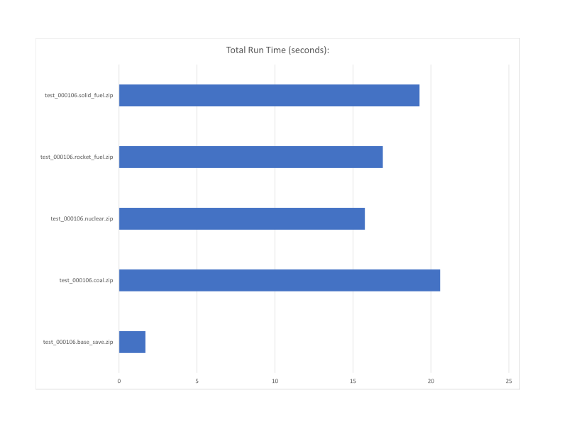
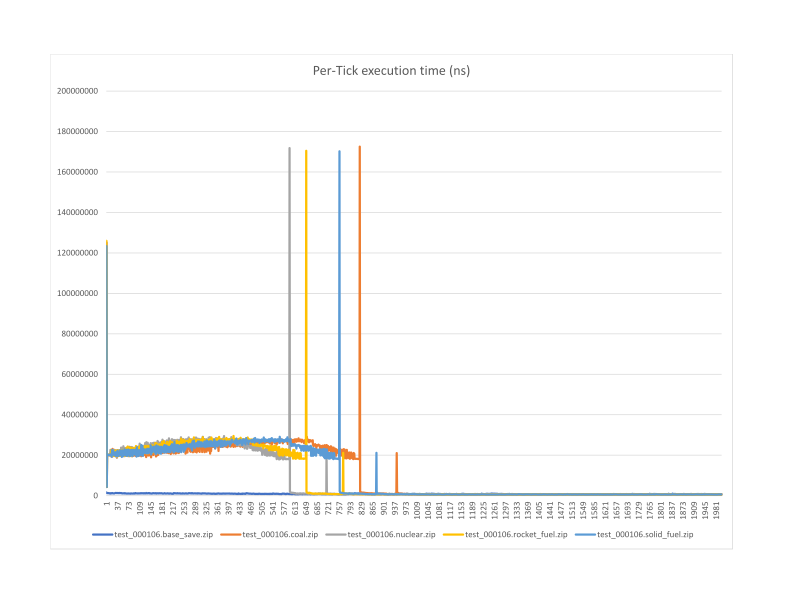
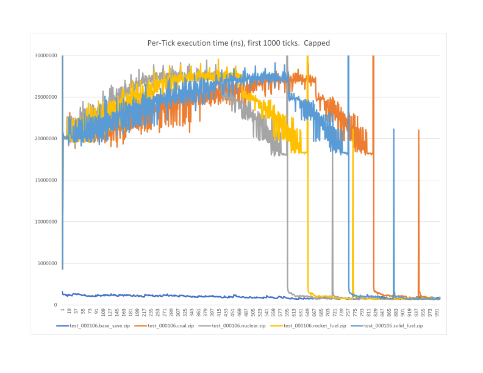

Use nuclear fuel in trains, it is more UPS efficient overall because trains complete their journeys more quickly
On the r/technicalfactorio discord server, flame_sla was wondering if slower trains (using non-nuclear fuel) were more UPS efficient than nuclear fueled trains.
The test consists of 1000 6-12 trains facing east. All start stations are connected to the circuit network and set to send the signal to the trains.
The distance between Start and End stations is approximately 520 tiles.
Note: This is the same test map as was used in test-000103
The game was then paused, and the constant combinator set to send the start signal. While paused, the following script was used to set the fuel in the locomotives for each test case:
/c
for _, ent in pairs(game.player.surface.find_entities_filtered{name = "locomotive"}) do
ent.clear_items_inside()
fuel = {}
fuel["count"] = 100
fuel["name"] = "solid-fuel"
ent.insert(fuel)
end

From this it is quite clear that the faster trains are better. Any reduction in per-tick processing caused by moving trains more slowly is more than made up for by the fact the journeys don't last as long with faster trains.
Since the data is available, it is interesting to look at the per-tick times for each test.

This is a bit noisy. The large spikes are caused by smoke (as discussed in test-000103). Zooming in on the graph a bit to get rid of those and see the lines better, we get this:

From this we can see that while the slower trains do have a lower processing overhead when accelerating more slowly (likely because of fewer collision checks being performed), the journey takes significantly less time with more
rapidly accelerating trains, thus using less processor time overall.
All maps will be uploaded here.
Nuclear fueled trains are more UPS efficient, as they complete their journey with significantly less overall processing. Depending on the base, this may also mean that fewer total trains are required (certainly fewer would need to be moving at any one time).